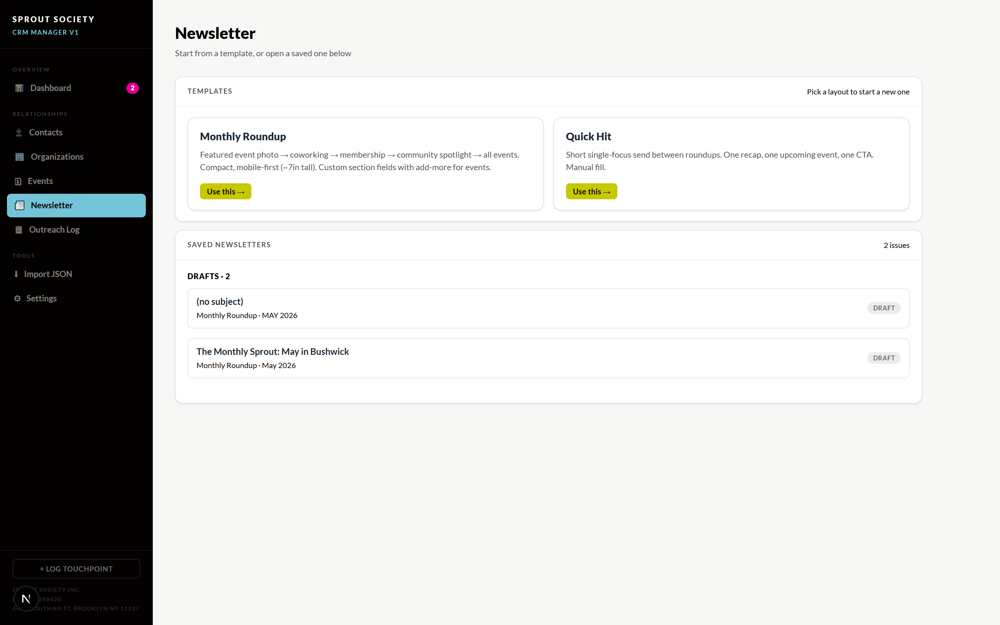
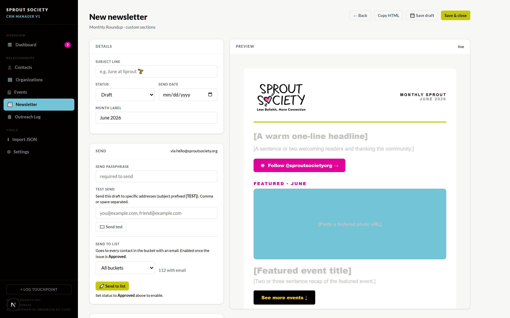
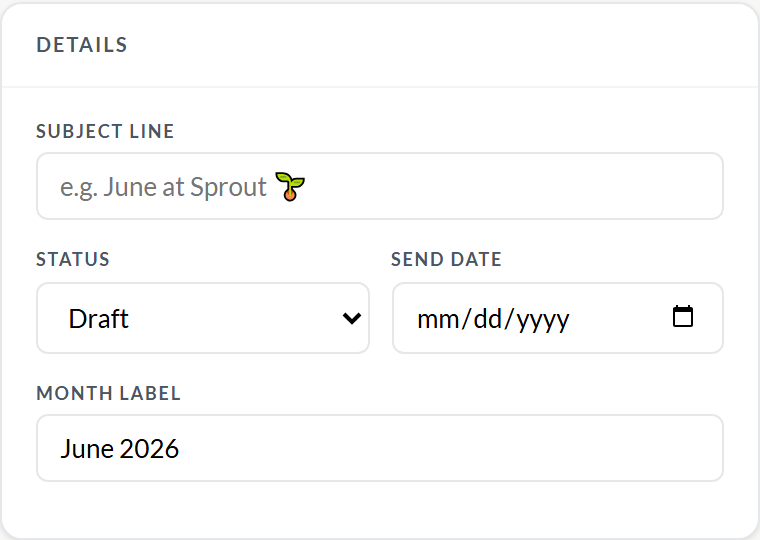
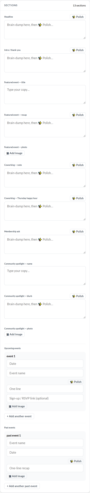
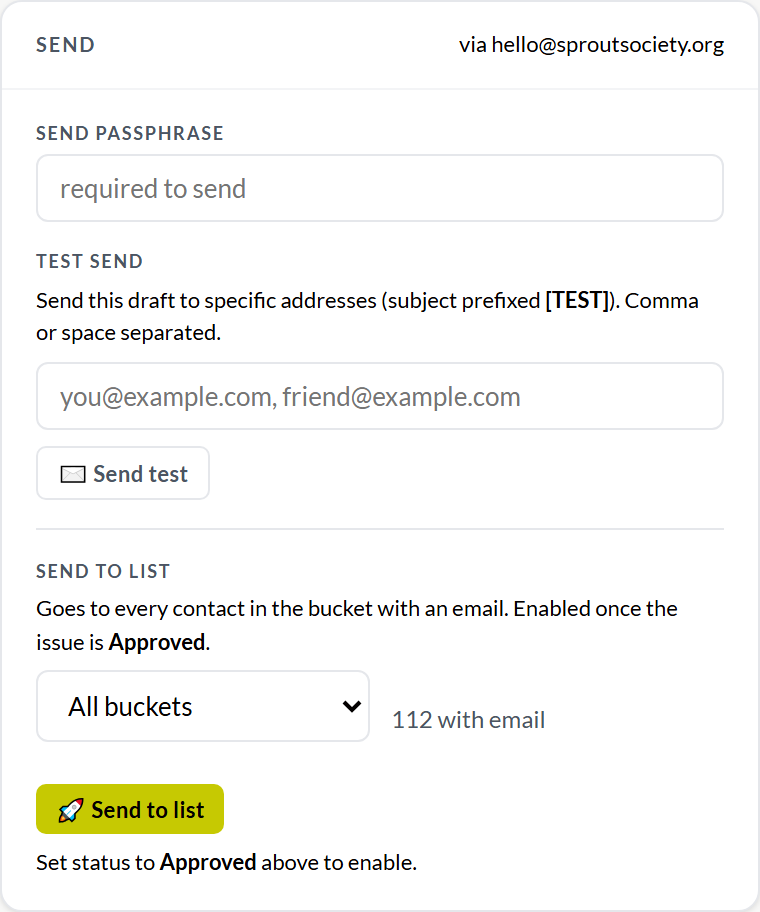
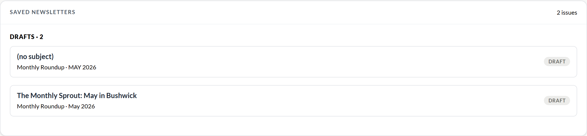

A plain-English walkthrough. No tech experience needed. If you can fill out a form and click a button, you can do this.
You'll pick a layout, fill in a few boxes (the app even cleans up your writing for you), check how it looks, send a test to yourself, and then send it to your people. That's the whole thing.
Look down the dark menu on the left side of the screen and click Newsletter. This page is your home base: new layouts to start from sit on top, and anything you've saved before sits underneath.

1 2 3Click the yellow Use this → button under whichever layout fits. Don't overthink it — most of the time you want the Monthly Roundup.
Your full monthly update: a featured event with a photo, the coworking note, a membership ask, a community spotlight, and a list of upcoming & past events. Built to look great on a phone.
A short, single-message send for between the monthly ones. One event, one update, one button. Use it when you just have one thing to say.
This is where you'll spend your time. The left side is your worksheet — boxes you fill in. The right side is a live preview — the actual email, updating as you type. You never have to imagine how it'll look; you just watch it appear.

1 2 3At the top of your worksheet is a small Details box. Two things matter here:
Leave Status on Draft for now and ignore Send date — we'll come back to those when it's time to send.

Below Details is the Sections list — one box per part of the newsletter (headline, intro, featured event, coworking, membership, spotlight, and your events). Just fill in the ones you have something for. Empty boxes simply don't show up in the email.
Two buttons make this easy, and they appear right next to the boxes:

Up in the top-right corner you have two save buttons. You really can't lose your work here — it also saves on its own as you go.
Every newsletter moves through four stages. You set the stage with the Status dropdown in the Details box. This is a safety net: the big Send to list button only switches on once you've marked it Approved, so nothing goes out by accident.
Find the Send box on your worksheet. Before sending to anyone else, send it to your own email so you can see exactly what it looks like when it lands.

1 2 3Once the test looks great, you're ready for real. Three quick moves:
Back on the main Newsletter page, scroll to Saved newsletters. Everything is sorted into Drafts, Pending, Approved, and Sent. Click any one to open it — to keep editing a draft, or just to look back at something you already sent.

Pick a template, fill the boxes, polish your words, test it on yourself, approve, and send. Take it one box at a time and you genuinely can't break anything.